ZIABRIDGE
Quality You Can Trust. Global Solutions You Can Rely On.
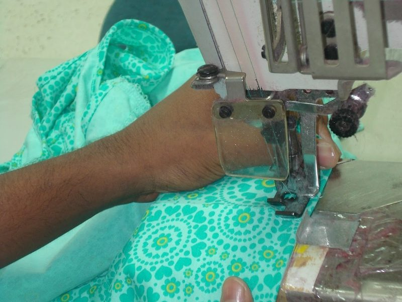
Workmanship is the overall skill and care that went into sewing a garment together — not just whether the seams hold, but whether they're straight, consistent, and finished the way the tech pack calls for. Two garments can use identical fabric and still feel completely different in quality, and workmanship is usually why.
Most workmanship checks come down to three things: how the stitch itself is formed, how strong and even the seam is, and whether left and right sides of the garment match.
How dense the stitching is. Most everyday garments fall somewhere around 8–12 SPI, though the right density depends on the fabric and the seam's job — a stretch seam and a structured seam aren't sewn the same way.
The width of fabric between the stitch line and the raw edge. Too narrow and the seam frays or weakens; too wide and it looks bulky and sits badly.
Whether the seam holds under a gentle pull test at stress points like shoulders and crotch seams — any opening under normal pulling force is a fail, not a debate.
Left and right sides (pockets, collar points, cuffs) should mirror each other, and any stripe or check print should align across seams — misalignment is one of the fastest ways to make a garment look cheap.
Different parts of a garment call for different stitch types, chosen for strength, stretch, or appearance. Here are the ones you'll see most often:
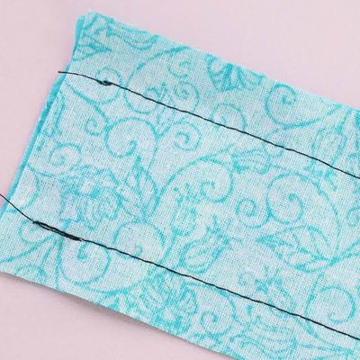
Two threads interlock inside the fabric. Strong, flat, looks the same on both sides — the most common stitch in woven garments.
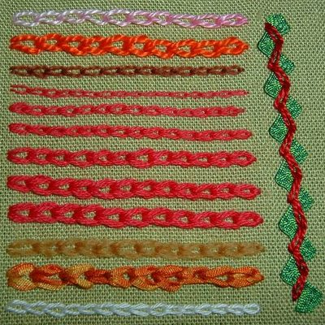
Loops of thread link into each other. Stretches more than lockstitch, but can unravel from one end if not secured.
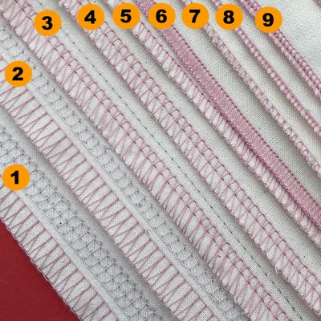
Wraps around the raw fabric edge while trimming it. Prevents fraying and gives knit seams stretch — common on t-shirt seams.
Two or three parallel rows of stitching, used for hemming t-shirts and activewear with a clean, stretchable finish.
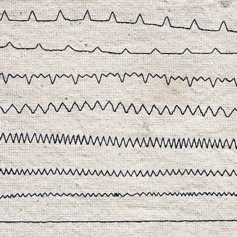
A side-to-side stitch used to reinforce buttonholes or sew stretch fabric on machines without a dedicated overlock function.
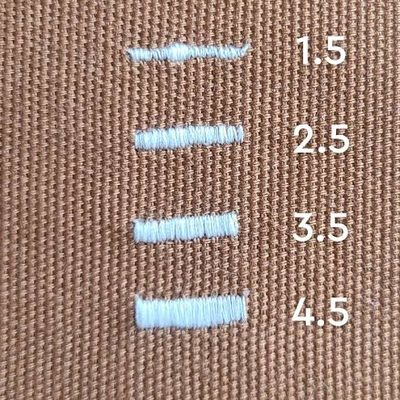
A small, dense block of reinforcement stitching at stress points — pocket corners, belt loops, fly openings.
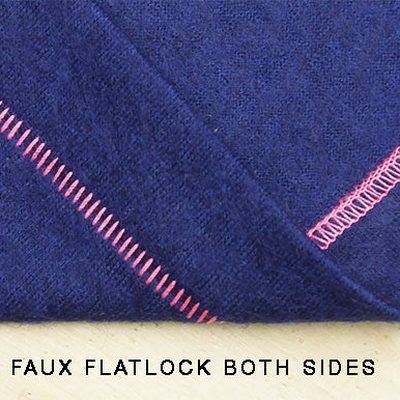
Catches only a few fibres of the outer fabric, so the stitch is nearly invisible from the outside — common for trouser hems.
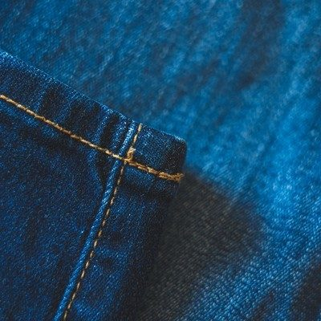
A visible line of stitching, often in a contrasting thread, placed near an edge or seam mostly for a decorative, finished look.
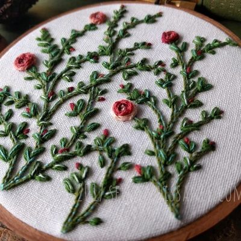
Stitching runs backward briefly at the start and end of a seam to lock the threads and stop them from pulling loose.
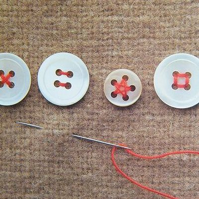
Thread passed back and forth through the button's holes and the fabric beneath it, securing the button in place.
Which stitch is "correct" depends entirely on the seam's job and the tech pack — a stitch type that's perfect for a t-shirt hem would be the wrong choice for a jeans waistband.
The wrong needle for the fabric is a common, avoidable cause of skipped stitches and needle-mark holes:
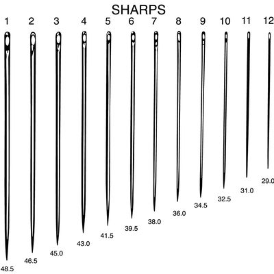
A fine, pointed tip that pierces tightly woven fabric cleanly — used for wovens like poplin, denim, and canvas.
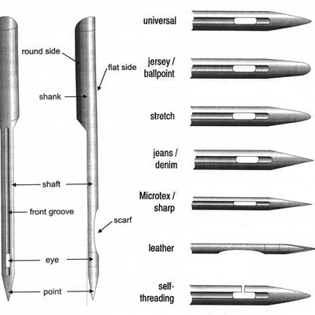
A rounded tip that slides between yarn loops instead of piercing them — used for knits, to avoid damaging the fabric.
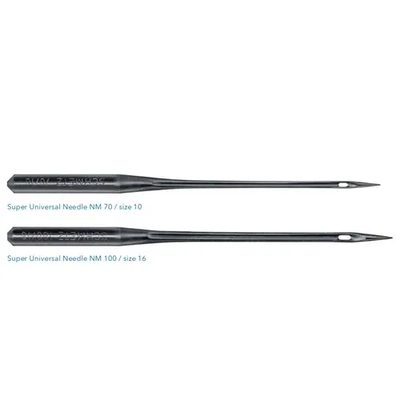
A slightly rounded, medium point that works acceptably on both wovens and knits — a practical default, though not the best choice for either.
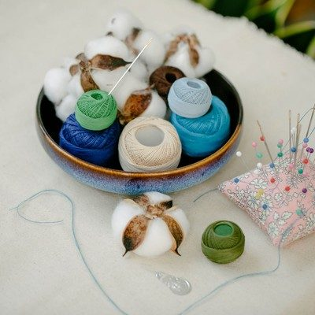
Natural fibre, low stretch, good heat resistance — suited to woven cotton fabrics that won't be stretched.
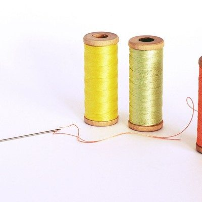
Strong, colourfast, and has a small amount of stretch — the most common all-purpose garment sewing thread today.
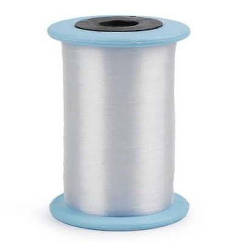
Very strong and highly elastic — used where seams need to stretch significantly, like swimwear and activewear.
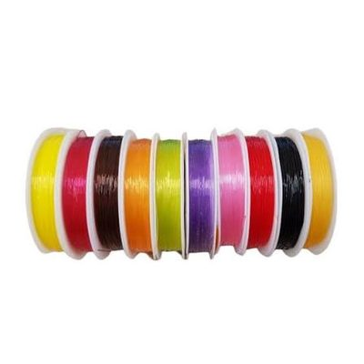
Coated to glide through the machine with less friction, reducing thread breakage on high-speed production lines.
Using the wrong thread — for example, low-stretch thread on a knit seam — is a common cause of seams snapping the first time the garment is stretched, even when the stitching itself was done correctly.
Untrimmed loose threads are also a common flag — not because they weaken the garment, but because they're usually a sign the whole piece was rushed through finishing.